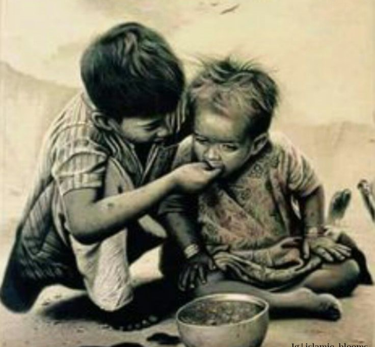

Once Musa (peace be upon him) asked Allah, "Is there anyone else who is as close as I am to You and can talk to You?" Allah Almighty said: O Musa! In the last time there will be an Ummah of Muhammad SAW and this Ummah will have a month in which they will have dry lips, thirsty tongues, dry eyes, hungry stomachs when they sit down to break the fast, then I will be very close to them. Musa, there is a distance of seventy curtains between you and me, but at the time of Iftar, there will not be a distance of even a curtain between that Ummah and me, and it is my responsibility to accept the supplications they ask. Will be. Subhan Allah
Abu Huraira(Allah be pleased with him) reported: When any one of you gets up in the morning in the state of fasting, he should neither use obscene language nor do any act of ignorance. And if anyone slanders him or quarrels with him, he should say:" I am fasting, I am fasting.


start sahur with

First of all we start TAHAJUD
.jpeg)
its 5:AM FIRSTLY we do sehri

its 5:AM perform "FAJAR" namaz
.jpeg)
Then recite HOLY QURAN

recite "QURAN" then after SLEEP


then prepration for aftar I help my mother in kichten
wiating iftar time

finally IT'S IFTARI TIME


work in kitchen until 8:00 o'clock
and then "TARAWEH"
.jpeg)
BEFORE SLEEP
this Ramadan Reminder help for other the countless apportunities that ramadan brings for us, one of them is where we save a good amount of money everyday let's use it to sponser someone's iftar not daily but plz one day in week
And then going to bad ,operate laptop ,and sweet dreams